vignettes/sure.Rmd
sure.RmdCategorical outcomes are encountered frequently in practice across different fields. For example, in medical studies, the outcome of interest is often binary (e.g., presence or absence of a particular disease after applying a treatment). In other studies, the outcome may be an ordinal variable; that is, a categorical outcome having a natural ordering. For instance, in an opinion poll, the response may be satisfaction, with categories low, medium, and high. In this case, the response is ordered: low medium high.
Logistic and probit regression are popular choices for modelling a binary outcome. Although this paper focuses on models for ordinal responses, the surrogate approach to constructing residuals actually applies to a wide class of general models of the form
where is a discrete cumulative distribution function, , is an model matrix, and is a vector of unknown regression coefficients. This includes binary regression as a special case. For example, the probit model has
where is the cumulative distribution function for the standard normal distribution.
The cumulative link model is a natural choice for modelling a binary or ordinal outcome. Consider an ordinal categorical outcome with ordered categories . In a cumulative link model, the cumulative probabilities are linked to the predictors according to
where is a continuous cumulative distribution function, are the category-specific intercepts, is a matrix of covariates, and is a vector of fixed regression coefficients. The intercept parameters satisfy . We should point out that some authors (and software) use the alternate formulation
This formulation provides coefficients that are consistent with the ordinary logistic regression model. The estimated coefficients from model (2) will have the opposite sign as those in model (1); see, for example, Agresti (2010).
Another way to interpret the cumulative link model is through a latent continuous random variable , where is a continuous random variable with location parameter , scale parameter , and cumulative distribution function . We then construct an ordered factor according to the rule
For , this leads to the usual probit model for ordinal responses,
Common choices for the link function and the implied (standard) distribution for are described in Table 1.
| Link | Distribution of | ||
|---|---|---|---|
| logit | logistic | ||
| probit | standard normal | ||
| log-log | Gumbel (max) | ||
| complementary log-log | Gumbel (min) | ||
| cauchit | Cauchy |
Table 1: Common link functions. Note: the logit is
typically the default link function used by most statistical software.
There are a number of R packages that can be used to fit cumulative
link models (1) and (2). The recommended package MASS
(Venables and Ripley 2002) contains the
function polr (proportional odds logistic regression)
which, despite the name, can be used with all of the link functions
described in Table 1. The VGAM package (Yee 2017) has the vglm function
for fitting vector generalized linear models, which includes the broad
class of cumulative link models. By default, vglm uses the
same parameterization as in Equation (1), but provides the option of
using the parameterization seen in Equation (2); this will result in the
estimated coefficients having the opposite sign. Package
ordinal (Christensen
2015) has the clm function for fitting cumulative
link models. The popular rms package (Harrell Jr 2017) has two functions:
lrm for fitting logistic regression and cumulative link
models using the logit link, and orm for fitting ordinal
regression models. Both of these functions use the parameterization seen
in Equation (2).
Next, we introduce the idea of surrogate residuals (Liu and Zhang 2017) and talk about some important properties. We then introduce the sure package, discuss the various modelling packages it supports, and demonstrate how sure can be used to detect misspecified mean structures, detect heteroscedasticity, detect misspecified link functions, check the proportionality assumption, and detecting interaction effects, respectively. The last section provides a real data analysis example involving the bitterness of wine.
For a continuous outcome , the residual is traditionally defined as the difference between the observed and fitted values. For ordinal outcomes, the residuals are more difficult to define, and few definitions have been proposed in the literature. Liu et al. (2009) propose using the cumulative sums of residuals derived from collapsing the ordered categories into multiple binary outcomes. Unfortunately, this method leads to multiple residuals for the ordinal outcome and therefore is difficult to interpret. Li and Shepherd (2012) show that the sign-based statistic (SBS)
can be used as a residual for ordinal outcomes; these are referred to later by Li and Shepherd (2012) as probability-based residuals, but we will follow Liu and Zhang (2017) and refer to them as SBS residuals. For an overview of the theoretical and graphical properties of the SBS residual (3), see Liu and Zhang (2017). These are available in the PResiduals package (Dupont et al. 2016). A limitation with the SBS residuals is that they are based on a discrete outcome and hence, are discrete themselves. This makes using them in various diagnostic plots far less useful.
Liu and Zhang (2017) propose a new type of residual that is based on a continuous variable that acts as a surrogate for the ordinal outcome . This surrogate residual is defined as
where is a continuous variable based on the conditional distribution of the latent variable given . In particular, given , Liu and Zhang (2017) show that follows a truncated distribution obtained by truncating the distribution of using the interval . The benefit of the surrogate residual (Eq. 4) is that it is based on a continuous variable , hence, is also continuous.
Furthermore, it can be shown (Liu and Zhang 2017) that if the hypothesized model agrees with the true model, then will have the following properties:
According to property (a), if , then . Properties 1-3 allow for a thorough examination of the residuals to check model adequacy and misspecification of the mean structure and link function.
The latent method discussed above applies to cumulative link models for ordinal outcomes. For more general models, we can define a surrogate using a technique called jittering. Suppose the true model for an ordinal outcome is
where is a discrete cumulative distribution function. This model is general enough to cover the cumulative link models (1) and (2), and nearly any parametric or nonparametric model for ordinal outcomes.
Liu and Zhang (2017) suggest defining the surrogate using either of the following two approaches:
Once a surrogate is obtained, we define the surrogate residuals in the same way as Equation (4). In either case, if the hypothesized model is correct, then symmetry around zero still holds; that is . For the latter case, if the hypothesized model is correct then . In other words, jittering on the probability scale has the additional property that the conditional distribution of given has an explicit form. This allows for a full examination of the distributional information of the residual.
Since the surrogate residuals are based on random sampling, additional variability is introduced. One way to account for this sample variability and help stabilize any patterns in diagnostic plots is to use the bootstrap (Efron 1979).
The procedure for bootstrapping surrogate residuals is similar to the model-based bootstrap algorithm used in linear regression. To obtain the -th bootstrap replicate of the residuals, Liu and Zhang (2017) suggest the following algorithm:
Step 1 Perform a standard case-wise bootstrap of the original data to obtain the bootstrap sample .
Step 2 Using the procedure outlined in the previous section, obtain a sample of surrogate residuals using the bootstrap sample obtained in Step 1.
This procedure is repeated a total of
times. For residual-vs-covariate (i.e.,
-vs-)
plots and residual-vs-fitted value (i.e.,
-vs-)
plots, we simply scatter all
residuals on the same plot. This approach is valid since the bootstrap
samples are drawn independently. For large data sets, we find it useful
to lower the opacity of the data points to help alleviate any issues
with overplotting. For Q-Q plots, on the other hand, Liu and Zhang (2017) suggest using the median of
the
bootstrap distributions, which is the implementation used in the
sure package (Greenwell et al.
2017).
The sure package supports a variety of R packages for fitting cumulative link and other types of models. The supported packages and their corresponding functions are described in Table 2.
| Package | Function(s) | Model | Parameterization |
|---|---|---|---|
| stats | glm |
binary regression | NA |
| MASS | polr |
cumulative link | |
| rms | lrm |
cumulative link | |
lrm |
logistic regression | NA | |
orm |
cumulative link | ||
| ordinal | clm |
cumulative link | |
| VGAM | vglm |
cumulative link | |
vgam |
cumulative link |
Table 2: Ordinal regression modelling packages supported by
sure and the corresponding parameterization they use
for fitting cumulative link models.
The sure package currently exports five functions:
resids: for constructing surrogate residuals;surrogate: for generating the surrogate response values
used in the residuals;sim_data: for simulating datasets representing
different model misspecifications;gof: for simulating
-values
from various goodness-of-fit tests;calc_resid: for calculating multinomial surrogate
residuals.It also provides plot() methods for producing various
diagnostic plots using tinyplot.
In addition, the package also includes a function
sim_data() to dynamically simulate five different types of
data sets: "quadratic", "heteroscedastic",
"gumbel", "proportionality", and
"interaction". These data sets (referred to as
df1 through df5 in the examples below) are
used throughout the paper to demonstrate how the surrogate residual can
be useful as a diagnostic tool for cumulative link models.
For illustration, the data frame df1 contains
observations from the following cumulative link model:
where
,
,
,
,
,
and
.
These parameters were chosen to ensure that 1) the sample from the
latent variable
is spread out, rather than clustering in a small interval, and 2) each
category of
is well represented in the sample; we follow these guidelines throughout
the simulated examples. The simulated data for this example can be
generated using sim_data(type = "quadratic"). Below, we fit
a (correctly specified) probit model using the polr
function from the MASS package.
# for residual function and sample data sets
library(sure)
# Simulate quadratic data
set.seed(977)
df1 <- sim_data(n = 2000, type = "quadratic")
# Fit a cumulative link model with probit link
library(MASS) # for polr function
fit.polr <- polr(y ~ x + I(x ^ 2), data = df1, method = "probit")The code chunk below obtains the SBS residuals (3) from the
previously fitted probit model fit.polr using the
PResiduals package and constructs a couple of
diagnostic plots. The results are displayed in Figure 1.
# Obtain the SBS/probability-scale residuals
library(PResiduals)
pres <- presid(fit.polr)
# Residual-vs-covariate plot and Q-Q plot
library(tinyplot) # for plotting
op <- par(mfrow = c(1, 2))
tinyplot(pres ~ x, data = data.frame(x = df1$x, pres = pres),
type = "p", col = adjustcolor("#444444", alpha.f = 0.5),
pch = 19, cex = 1, ylab = "Probability-scale residual")
lines(lowess(df1$x, pres), col = "red", lwd = 1.2)
u_quantiles <- qunif(ppoints(length(pres)), min = -1, max = 1)
tinyplot(sort(pres) ~ u_quantiles, type = "p",
col = adjustcolor("#444444", alpha.f = 0.5), pch = 19, cex = 1,
xlab = "Theoretical quantile", ylab = "Sample quantile")
abline(0, 1, col = "grey", lty = "dashed")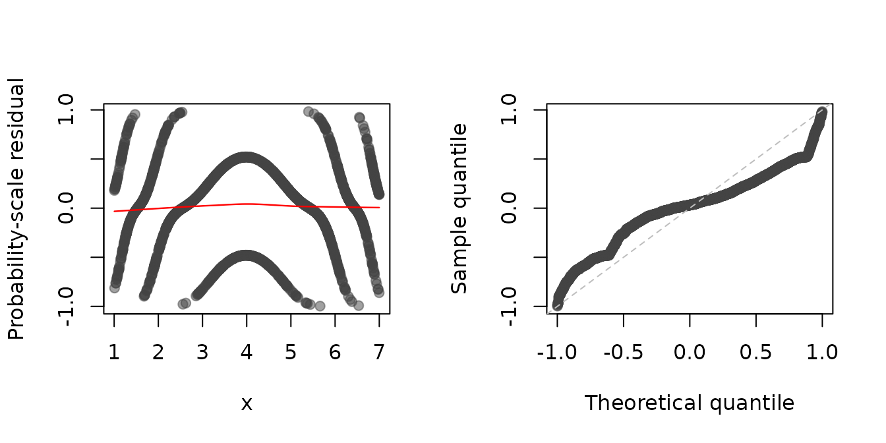
Figure 1: SBS residual plots for the (correctly specified) probit model
fit to the df1 data set. Left: Residual-vs-covariate plot
with a nonparametric smooth (red curve). Right: Q-Q plot of the
residuals.
par(op)Note: the reference distribution for the SBS residual is the distribution.) As can be seen in the left side of Figure (1), the SBS residuals, which are inherently discrete, often display unusual patterns in diagnostic plots, making them less useful as a diagnostic tool. There is a pattern for each of the classes!
Similarly, wee can use the resids function to obtain the
surrogate residuals. This is illustrated in the following code chunk;
and the results are displayed in the figure that follows.
(Note: since the surrogate residuals are based on
random sampling, we specify the seed via the set.seed
function throughout for reproducibility.)
# for reproducibility
set.seed(101)
sres <- resids(fit.polr)
# Residual-vs-covariate plot and Q-Q plot
op <- par(mfrow = c(1, 2))
plot(sres, what = "covariate", covariate = df1$x, xlab = "x")
plot(sres, what = "qq", distribution = qnorm)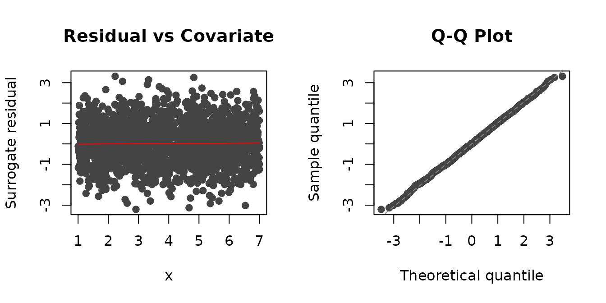
Figure 2: Surrogate residual plots for the (correctly specified) probit
model fit to the df1 data set. Left: Residual-vs-covariate
plot with a nonparametric smooth (red curve). Right: Q-Q plot of the
residuals.
par(op)The sure package also includes plot
methods for the various classes of models listed in Table 1, so you can
just give plot the fitted model directly. The benefit of
this approach is that the fitted values and reference distribution (used
in Q-Q plots) are automatically extracted. For example, to reproduce the
Q-Q plot in Figure 2, we could have just used:
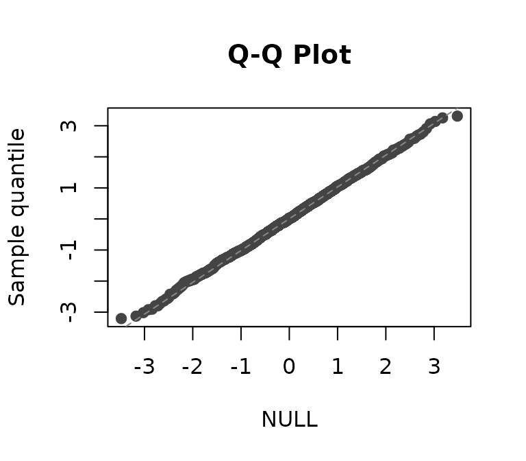
Figure 3: plot option.
Suppose that we did not include the quadratic term in our fitted model. We would expect a residual-vs- plot to indicate that such a quadratic term is missing. Below we update the previously fitted model by removing the quadratic term, then update the residual-vs-covariate plots (code not shown). The updated residual plots are displayed in Figure 4.
# remove quadratic term
fit.polr <- update(fit.polr, y ~ x)
set.seed(1055)
op <- par(mfrow = c(1, 2))
plot(fit.polr, what = "covariate", covariate = df1$x, alpha = 0.5,
xlab = "x", ylab = "Surrogate residual", main = "")
pres <- presid(fit.polr)
plot(x = df1$x, y = pres, col = adjustcolor("#444444", alpha.f = 0.5),
pch = 19, cex = 1, xlab = "x", ylab = "Probability-scale residual", main = "")
lines(lowess(df1$x, pres), col = "red", lwd = 1.2)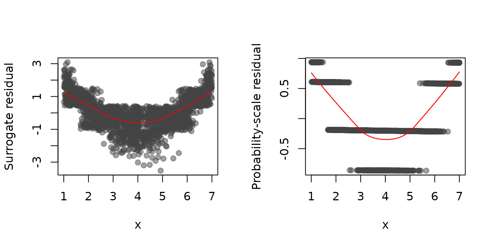
Figure 4: Residual-vs-covariate plots with nonparametric smooths (red curves) for a probit model with a misspecified mean structure fit to the simulated data from model (6). Left: Surrogate residuals. Right: SBS residuals.
par(op) The SBS residuals gives some indication of a misspecified mean structure, but this only becomes more clear with increasing , and the plot is still discrete. This is overcome by the surrogate residuals which produces a residual plot not unlike those seen in ordinary linear regression models.
One issue that often raises concerns in statistical inference is that of heteroscedasticity; that is, when the error term has non constant variance. Heteroscedasticity can bias the statistical inference and lead to improper standard errors, confidence intervals, and -values. Therefore, it is imperative to identify heteroscedacticity whenever present and take appropriate action (e.g., transformations, etc.). In ordinary linear regression, this topic has been covered extensively. For categorical models, on the other hand, not much has been proposed in the literature.
As discussed when introducing surrogate residuals, one of the properties of is that, if the model is specified correctly, then , where is a constant.
For this example, we generated observations from the following ordered probit model:
where
,
,
,
,
,
,
and
.
Notice how the variability is an increasing function of
.
These data can be simulated using
sim_data(type = "heteroscedastic") (referred to as
df2 below).
The following block of code uses the orm function from
the popular rms package to fit a probit model to the
simulated data. Note: we had to set
x = TRUE in the call to orm in order to use
the presid function later.
# Simulate heteroscedastic data
set.seed(108)
df2 <- sim_data(n = 2000, type = "heteroscedastic")
# Fit a cumulative link model with probit link
library(rms) # for orm function
fit.orm <- orm(y ~ x, data = df2, family = "probit", x = TRUE, y = TRUE)If heteroscedasticity is present, we would expect this to show up in various diagnostic plots, such as a residual-vs-covariate plot. Below we obtain the SBS and surrogate residuals as before and plot them against . The results are displayed in Figure~.
# for reproducibility
set.seed(102)
op <- par(mfrow = c(1, 2))
plot(resids(fit.orm), what = "covariate", covariate = df2$x, xlab = "x")
pres <- presid(fit.orm)
plot(x = df2$x, y = pres, col = adjustcolor("#444444", alpha.f = 0.25),
pch = 19, cex = 1, xlab = "x", ylab = "Probability scale residual", main = "")
lines(lowess(df2$x, pres), col = "red", lwd = 1.2)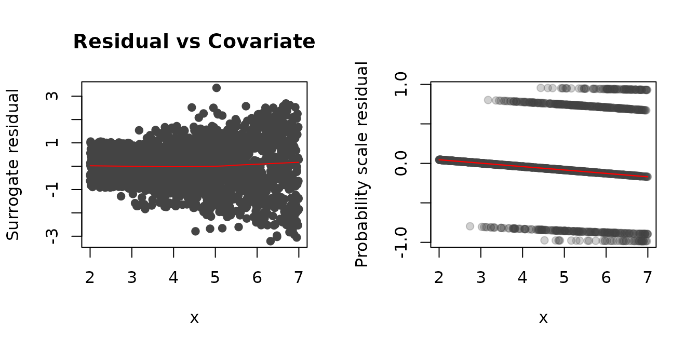
Figure 5: Residual-vs-covariate plots with nonparametric smooths (red curves) for the simulated heteroscedastic data. Left: Surrogate residuals. Right: SBS residuals.
par(op)In Figure (5), it is clear from the plot of the surrogate residuals (left side of Figure (5)) that the variance increases with , a sign of heteroscedasticity. As a matter of fact, the plot suggests that the true link function has a varying scale parameter, . The plot of the SBS residuals (right side of Figure (5)), on the other hand, gives no indication of an issue with nonconstant variance.
As outlined in section about jittering, the jittering technique is broadly applicable to virtually all parametric and nonparametric models for ordinal responses. To illustrate, the code chunk below uses the VGAM package to fit a vector generalized additive model to the same data using a nonparametric smooth for .
library(VGAM) # for vgam and vglm functions
fit.vgam <- vgam(y ~ s(x), family = cumulative(link = probitlink, parallel = TRUE),
data = df2)To obtain a surrogate residual using the jittering technique, we can
set method = "jitter" in the call to resids or
plot. There is also the option jitter.scale
which can be set to either "probability", for jittering on
the probability scale (the default), or "response", for
jittering on the response scale. In the code chunk below, we use the
plot method to obtain residual-by-covariate plots using
both types of jittering. The results, which are displayed in Figure 6,
clearly indicate that the variance increases with increasing
.
# for reproducibility
set.seed(103)
op <- par(mfrow = c(1, 2))
res1 <- resids(fit.vgam, method = "jitter")
plot(res1, what = "covariate", covariate = df2$x, xlab = "x", main = "Probability scale")
res2 <- resids(fit.vgam, method = "jitter", jitter_scale = "response")
plot(res2, what = "covariate", covariate = df2$x, xlab = "x", main = "Response scale")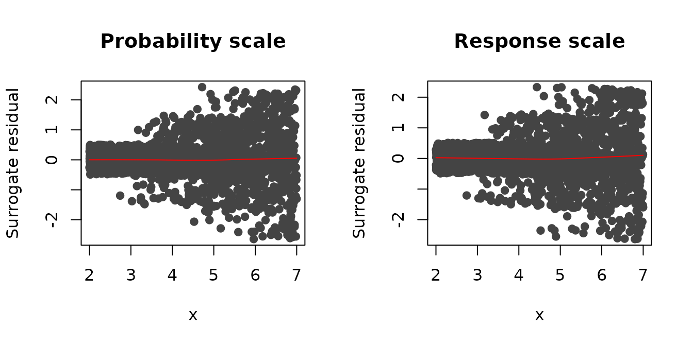
Figure 6: Residual-vs-covariate plots with nonparametric smooths (red curves) from a vector generalized additive model fit to the simulated heteroscedastic data. Left: Jittering on the probability scale (default). Right: Jittering on the response scale.
par(op)For this example, we simulated observations from the following model
where
is the CDF for the Gumbel (max) distribution (see Table 1),
,
,
,
,
,
and
.
The data can be simulated using sim_data(type = "gumbel")
(referred to as df3 below).
Below we fit a model with various link functions. For this model, however, the correct link function to use is the log-log link. From these models, we construct Q-Q plots of the residuals using bootstrap replicates. From the Q-Q plots in Figure 7, it is clear that the model with the log-log link (which corresponds to Gumbel (max) errors in the latent variable formulation) is the most appropriate, while the other plots indicate deviations from the hypothesized model.
# Simulate Gumbel data
set.seed(977)
df3 <- sim_data(n = 2000, type = "gumbel")
# Fit models with various link functions to the simulated data
fit.probit <- polr(y ~ x + I(x ^ 2), data = df3, method = "probit")
fit.logistic <- polr(y ~ x + I(x ^ 2), data = df3, method = "logistic")
fit.loglog <- polr(y ~ x + I(x ^ 2), data = df3, method = "loglog") # correct link
fit.cloglog <- polr(y ~ x + I(x ^ 2), data = df3, method = "cloglog")
# Construct Q-Q plots of the surrogate residuals for each model
set.seed(1056) # for reproducibility
op <- par(mfrow = c(2, 2))
plot(fit.probit, nsim = 100, what = "qq", main = "probit")
plot(fit.logistic, nsim = 100, what = "qq", main = "logistic")
plot(fit.loglog, nsim = 100, what = "qq", main = "log-log (correct)")
plot(fit.cloglog, nsim = 100, what = "qq", main = "cloglog")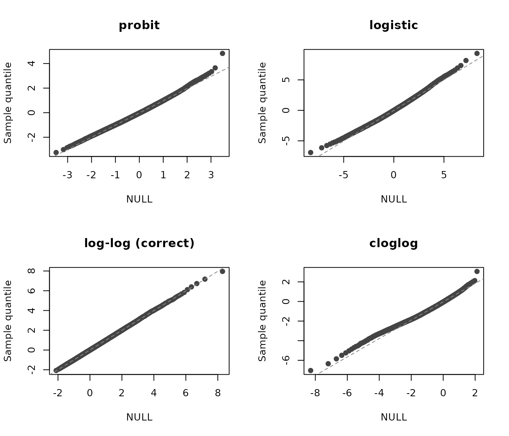
Figure 7: Q-Q plots of the residuals for various cumulative link models fit to simulated data with Gumbel (max) errors. Top left: A model with probit link. Top right: A model with logit link. Bottom left: A model with log-log link (i.e., the correct model). Bottom right: A model with complementary log-log link.
par(op)Alternatively, we could also use the surrogate residuals to make use
of existing distance-based goodness-of-fit (GOF) tests; for example, the
Kolmogorov-Smirnov distance. The gof function in
sure can be used to produce simulated
-values
from such tests.
Currently, the gof function supports three
goodness-of-fit tests: the Kolmogorov-Smirnov test
(test = "ks"), the Anderson-Darling test
(test = "ad"), and the Cramer-Von Mises test
(test = "cvm"). Below, we use the gof function
to simulate
-values
from the Anderson-Darling test for each of the four models; we also set
nsim to 100 to produce smoother plots and reduce the
sampling error induced by the surrogate procedure. The plot
method is then used to display the empirical distribution function (EDF)
of the simulated
-values.
A good fit would imply uniformly distributed
-values;
hence, the EDF would be relatively straight with a slope of one. The
results, which are displayed in Figure 8, agree with the Q-Q plots from
Figure 7 in that the log-log link is the most appropriate for these
data. (Note: the plotting method for "gof"
objects uses base R graphics; hence, we can use the par
function to set various graphical parameters.)
par(mfrow = c(2, 2), mar = c(2, 4, 2, 2) + 0.1)
set.seed(8491) # for reproducibility
plot(gof(fit.probit, nsim = 100, test = "ad"), main = "")
plot(gof(fit.logistic, nsim = 100, test = "ad"), main = "")
plot(gof(fit.loglog, nsim = 100, test = "ad"), main = "")
plot(gof(fit.cloglog, nsim = 100, test = "ad"), main = "")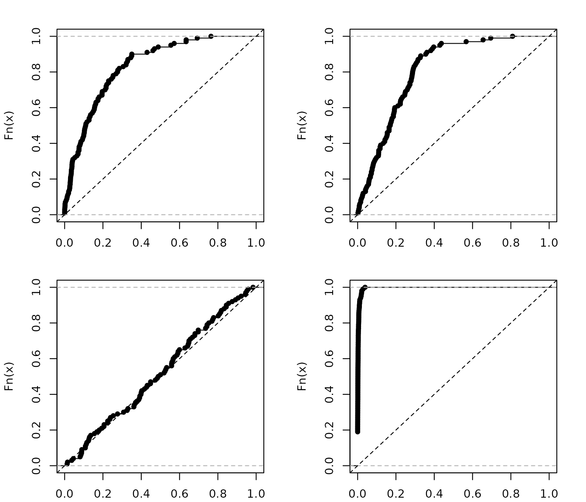
Figure 8: EDFs of the simulated -values from an Anderson-Darling GOF test for various cumulative link models fit to simulated data with gumbel errors. Top left: A model with probit link. Top right: A model with logit link. Bottom left: A model with log-log link (i.e., the correct model). Bottom right: A model with complementary log-log link.
An important feature of the cumulative link model (1) is the proportional odds assumption, which assumes that the mean structure, , remains the same for each of the categories; for the logit case (see row one of Table 1), this is also referred to as the proportional odds assumption. Harrell (2001) suggests computing each observation’s contribution to the first derivative of the log likelihood function with respect to , averaging them within each of the categories, and examining any trends in the residual plots, but these plots can be difficult to interpret. Fortunately, it is relatively straightforward to use the simulated surrogate response values to check the proportionality assumption.
To illustrate, we generated 2000 observations from each of the following probit models
where
,
,
,
,
,
,
and
.
The data can be simulated using
sim_data(n = 4000, type = "proportionality") (referred to
as df4 below).
Checking the proportionality assumption here amounts to checking
whether or not
.
As outlined in Liu and Zhang (2017), we
can generate surrogates
and
,
both conditional on
.
We then define the difference
which, conditional on
,
follows a
distribution. If
,
then
should be independent of
.
This can be easily checked by plotting
against
.
Below, we use the surrogate function to generate the
surrogate response values directly (as opposed to the residuals) and
generate the
-vs-
plot shown in Figure 9. It is clear that
;
hence, the proportionality assumption does not hold.
# Simulate proportionality data
set.seed(977)
df4 <- sim_data(n = 4000, type = "proportionality")
# Fit separate models (VGAM should already be loaded)
fit1 <- vglm(y ~ x, data = df4[1:2000, ],
cumulative(link = probitlink, parallel = TRUE))
fit2 <- update(fit1, data = df4[2001:4000, ])
# Generate surrogate response values
set.seed(8671) # for reproducibility
s1 <- surrogate(fit1)
s2 <- surrogate(fit2)
library(tinyplot)
tinyplot(D ~ x, data = data.frame(D = s1 - s2, x = df4[1:2000, ]$x),
type = "p", col = "#444444", pch = 19, cex = 1,
ylab = "D")
lines(lowess(df4[1:2000, ]$x, s1 - s2), col = "red", lwd = 1.2)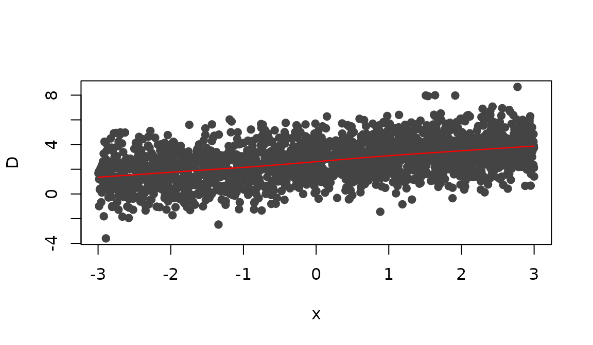
Figure 9: Scatterplot of vs. with a nonparametric smooth (red curve).
A common challenge in model building is determining whether or not there are important interactions between the predictors in the data. Using the surrogate residuals, it is rather straightforward to determine if such an interaction effect is missing from the assumed model.
For illustration, we generated observations from the following ordered probit model
where
,
,
,
,
,
,
,
and
is a factor with levels Treatment and Control.
The simulated data can be simulated using
sim_data(type = "interaction") (referred to as
df5 below). Below, we fit two probit models using the
clm function from the ordinal package
(which should already be loaded). The first model only corresponds to
the simulated control group, while the second model corresponds to the
treatment group.
# Simulate interaction data
set.seed(922)
df5 <- sim_data(n = 2000, type = "interaction")
library(ordinal) # for clm function
fit1 <- clm(y ~ x1, data = df5[df5$x2 == "Control", ], link = "probit")
fit2 <- clm(y ~ x1, data = df5[df5$x2 == "Treatment", ], link = "probit")If the true model contains an interaction term
,
but the fitted model does not include it, we can detect this
misspecification using the surrogate residuals. We simply plot
versus
for treatment group, and compare it to the plot of
versus
for the controls—or better yet, we can just use the surrogate response
instead of
.
The trends in these two plots should be different. Below, we use
tinyplot along with the surrogate function to
construct such a plot for both fitted models. The results are displayed
in Figure~. The plot indicates a negative association between
and the outcome within the control group, and a positive association
between
and the treatment group (i.e., an interaction between
and
).
# for reproducibility
set.seed(1105)
# surrogate response values
df5$s <- c(surrogate(fit1), surrogate(fit2))
library(tinyplot)
op <- par(mfrow = c(1, 2))
# Control
df5_c <- df5[df5$x2 == "Control", ]
tinyplot(s ~ x1, data = df5_c, type = "p",
col = adjustcolor("#444444", alpha.f = 0.5), pch = 19, cex = 1,
ylab = "Surrogate response", xlab = expression(x[1]), main = "Control")
lines(lowess(df5_c$x1, df5_c$s), col = "red", lwd = 1.2)
# Treatment
df5_t <- df5[df5$x2 == "Treatment", ]
tinyplot(s ~ x1, data = df5_t, type = "p",
col = adjustcolor("#444444", alpha.f = 0.5), pch = 19, cex = 1,
ylab = "Surrogate response", xlab = expression(x[1]), main = "Treatment")
lines(lowess(df5_t$x1, df5_t$s), col = "red", lwd = 1.2)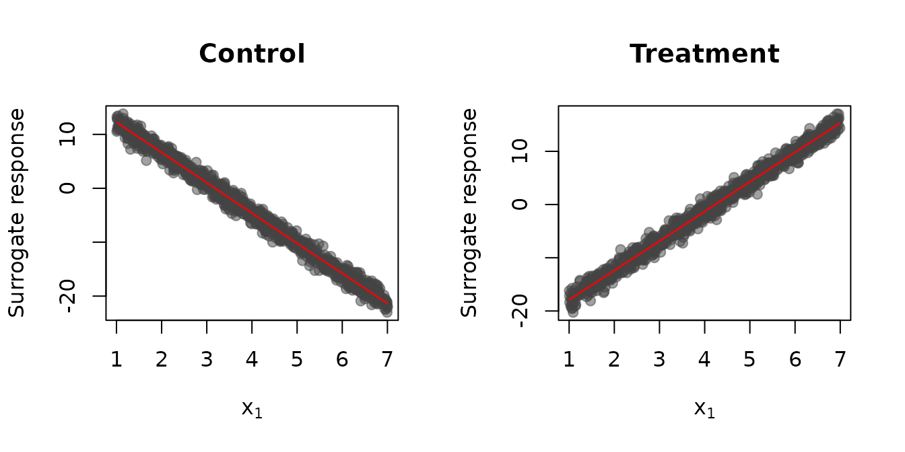
Figure 10: Scatterplot of the surrogate response versus with a nonparametric smooth (red line). Left: Control group. Right: Treatment group.
par(op)Randall (1989) performed an experiment
on factors determining the bitterness of wine. Two binary treatment
factors, temperature and contact (between juice and skin), were
controlled while crushing the grapes during wine production. Nine judges
each assessed wine from two bottles from each of the four treatment
conditions; for a total of
.
The response is an ordered factor with levels
.
The data are available in the ordinal package; see
?ordinal::wine for details.
# load wine data set
data(wine, package = "ordinal")
wine.clm <- clm(rating ~ temp + contact, data = wine, link = "probit")Since both of the covariates in this model are binary factors,
scatterplots are not appropriate for displaying the
residual-by-covariate relationships. Instead, the plot
method in sure uses boxplots; a future release is
likely to include the additional option for producing nonparametric
densities for each level of a factor. The code chunk below uses the
plot method to produce some standard residual diagnostic
plots. The results are displayed in Figure 11. The Q-Q plot and
residual-vs-fitted value plot do not indicate any serious model
misspecifications. Furthermore, the boxplots reveal that the medians of
the surrogate residuals are very close to zero, and the distribution of
the residuals within each level appear to be symmetric and have
approximately the same variability (with the exception of a few
outliers).
# for reproducibility
set.seed(1225)
op <- par(mfrow = c(2, 2))
plot(wine.clm, nsim = 10, what = "qq")
plot(wine.clm, nsim = 10, what = "fitted", alpha = 0.5)
plot(wine.clm, nsim = 10, what = "covariate", covariate = wine$temp,
xlab = "Temperature")
plot(wine.clm, nsim = 10, what = "covariate", covariate = wine$contact,
xlab = "Contact")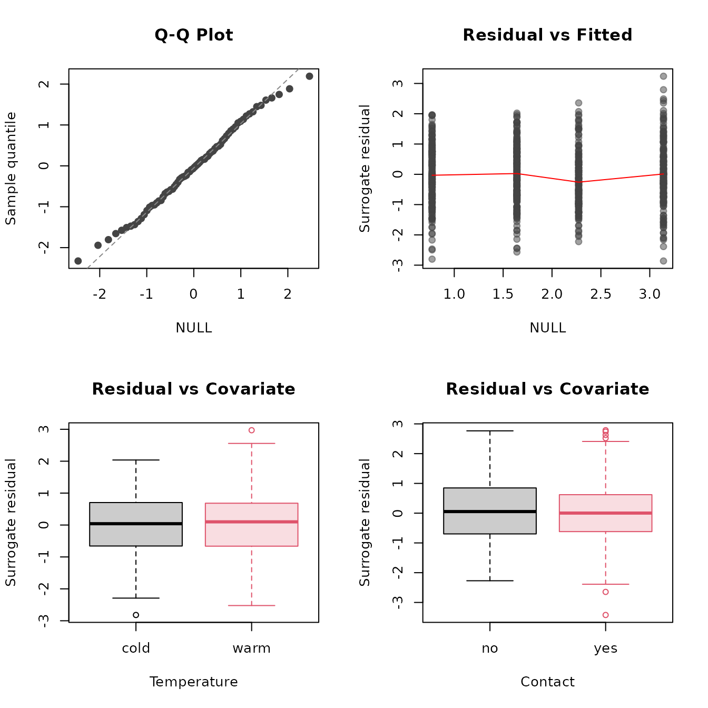
Figure 11: Residual diagnostic plots for the quality of wine example.
par(op)